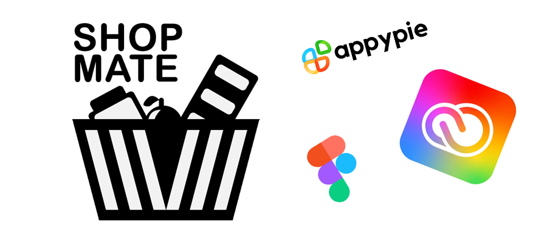
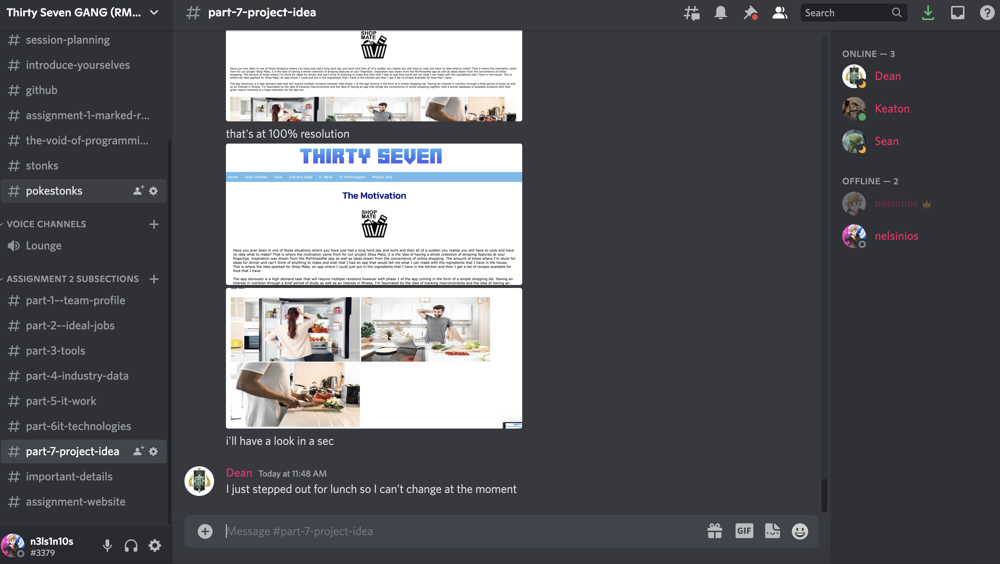
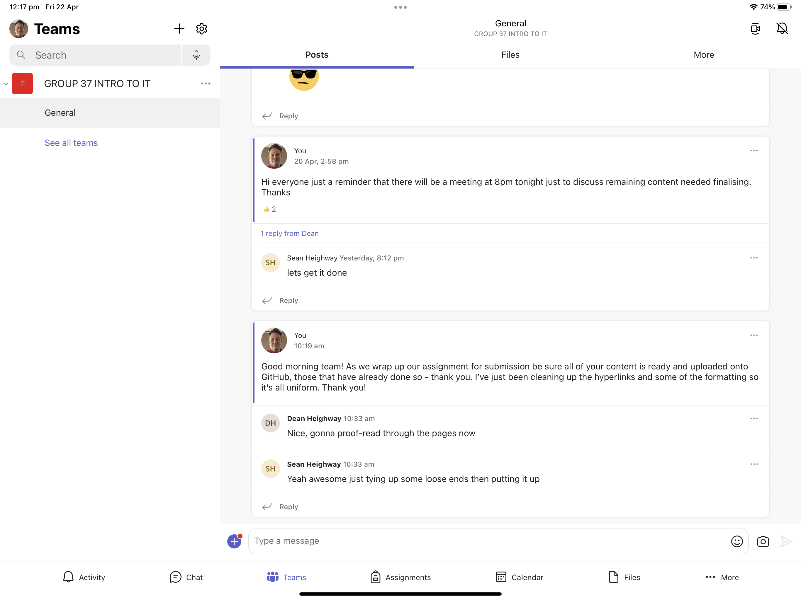
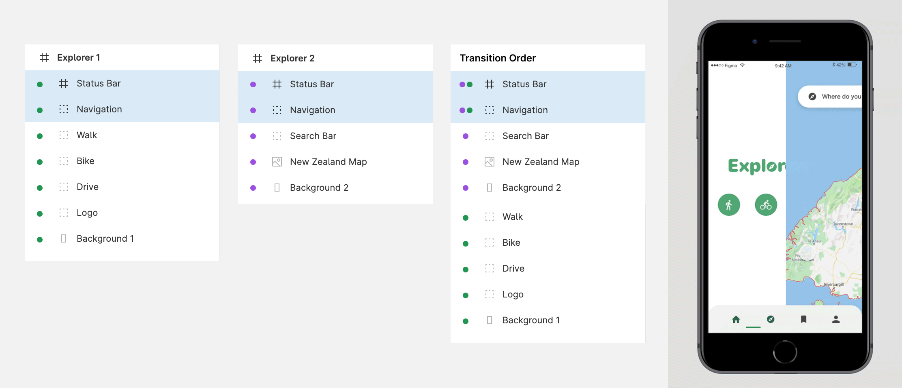
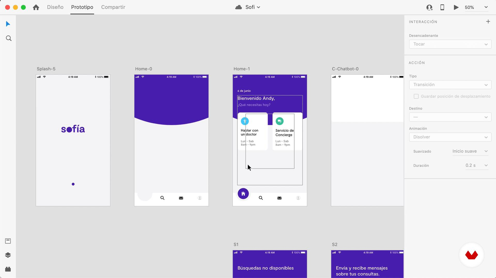

Tools & Tech

Initital Stages
The tools required to develop the proposed project can vary depending on the requirements the application requires, from the initial concept to the final development, and successive releases.
For this initial step, concepts of a mock-up display will be presented to articulate to the prospective audience how the application would look, with the design to be further refined in the next assignment. Using programs such as Adobe Photoshop and Illustrator to demonstrate clean visual concepts for the team to discuss how the layout would work and what would be easy for any consumer to use. This will also be translated onto a website as the intention is not to restrict the use of an application to just smart device users – but anyone with a computer, since everyone has the need for food intake.
Proposed Development
The proposal is to expand on the roadmap outlined in the outcome, creating smaller manageable milestones in order the team of Thirty Seven to craft a project that can be feasibly created in the restricted amount of time. Using tools for online communications like Teams for our meetings and formal updates, Discord for impromptu notes and informal updates and GitHub for updating the group’s repository.


The team of Thirty Seven will continue communication through the use of Discord and Teams as it provided effective channels in conveying work production and where the team was standing at various stages of the development of the assignment.
Secondly is to explore the further use of an app builder. Now the need of building an app would only need to suit the purpose for presenting the proposal of its utility, but also to finesse with a working prototype as it will demonstrate the teams understanding of how app development begins and continues forward. After some research, there has been debate whether to use a free-to-build generic app builder such as AppyPie, a prototype producer such as Figma or the use of Adobe Creative Suite, such as the use of Adobe Photoshop, Illustrator and Adobe XD in order to ensure the user interface of the mobile application is workable.


Examples of the mockups that can be designed for the app.
As this website was built with the use of Adobe Dreamweaver, it would be of note that ShopMate’s website display will also be created and modified using these same applications. If it came to be a scenario of last resort in demonstration, producing a video presentation with the use of Adobe Premiere Pro or After Effects may be of consideration. However, this does not exclude the possibility of combining the use of all technologies mentioned to craft the ShopMate application.
Feasibility and Expectations
Lastly, as the project is a website and UI based experienced it is to be expected that these will be the programs used to bring our vision to life, but given this is the first application any of us have come to the experience of creating, it would be expected that there will be amendments to our strategy when it comes to the final assignment – but it is not to say that given our level of commitment to this project and where we align ourselves for our ideal positions, it would be wise to consider longer term production of this application beyond Introduction to Information Technology, strengthening and building our portfolio.